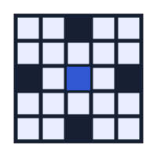

Accessible by default
Keyboard navigation, visible focus states, semantic markup, and readable contrast are part of the design rather than afterthoughts.
CS5610 · Web Development
Welcome to my growing arcade: a semester-long project where I am building accessible web experiences from the fundamentals up.

Keyboard navigation, visible focus states, semantic markup, and readable contrast are part of the design rather than afterthoughts.
This first version uses only HTML and CSS. Future course projects will progressively add richer application architecture.
The visual system uses reusable color, type, and spacing tokens so the arcade can expand without losing consistency.